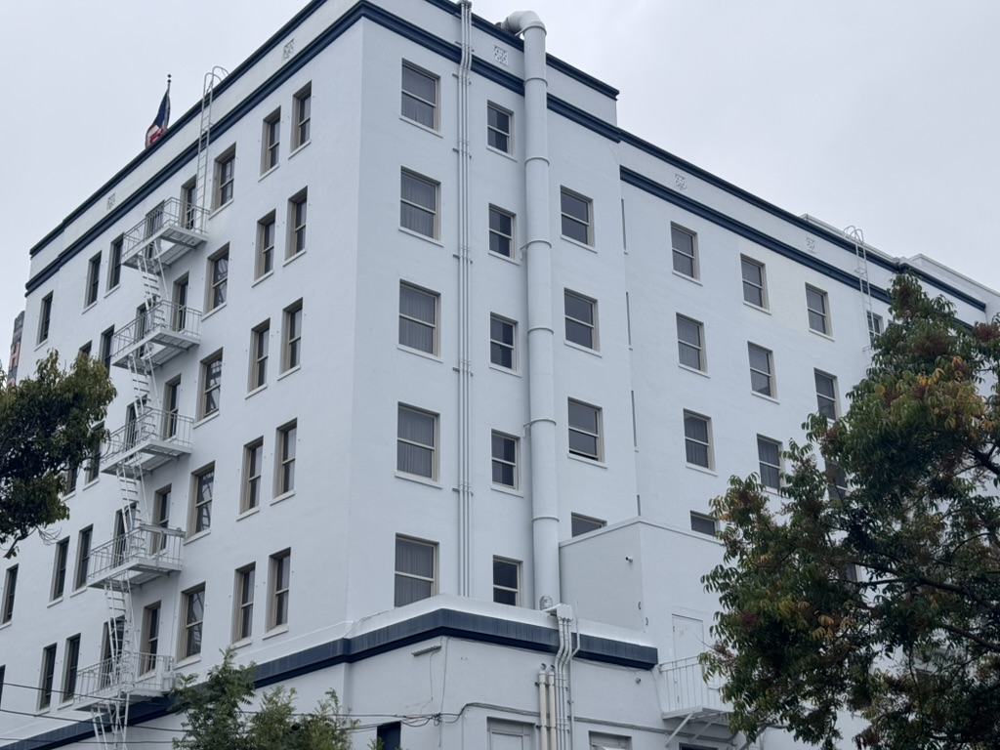
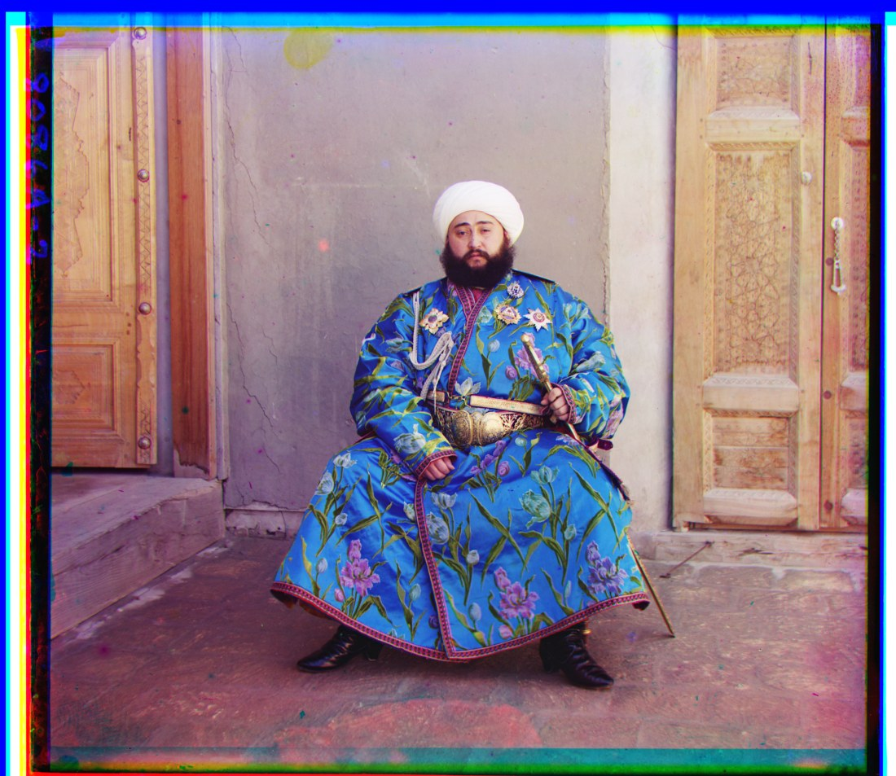
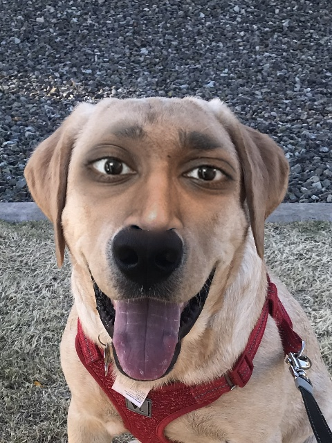

Selfies, perspective compression, and a dolly zoom — getting acquainted with focal length and the center of projection.

Colorizing the Prokudin-Gorskii glass plates — single-scale and pyramid alignment of three filtered exposures into one photograph.

Convolution from scratch, edge detection, sharpening, hybrid images, and multiresolution blending.